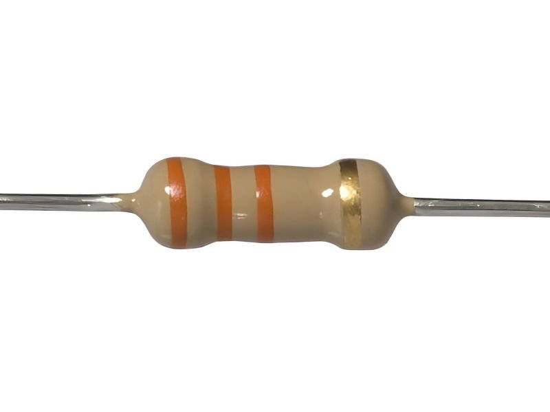
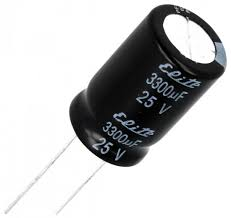
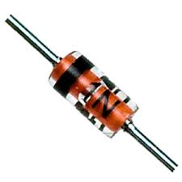
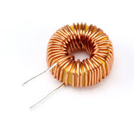

Componente electrice fundamentale
Rezistor

Un rezistor este un component electric pasiv care limitează sau controlează curentul electric într-un circuit. Acesta joacă un rol esențial în majoritatea circuitelor electronice, având o valoare de rezistență măsurată în ohmi (Ω). Rezistența unui rezistor reprezintă opoziția pe care o oferă la trecerea curentului electric și depinde de materialul din care este fabricat și de dimensiunile sale.
Condensator

CUn condensator este un component electric pasiv care stochează energie sub formă de câmp electric.
Acesta este format din două plăci conductoare separate de un material izolator, cunoscut sub numele de dielectric.
Condensatorii sunt utilizați într-o gamă largă de aplicații electronice și electrice, având rolul principal de a stoca și de a elibera energie rapid într-un circuit.
Dioda

O diodă este un component electronic semiconductoare care permite curentului electric să circule într-o singură direcție, blocându-l în cealaltă direcție.
Aceasta funcționează pe baza proprietăților semiconductoare ale materialelor din care este realizată, cum ar fi siliciul sau germaniul. Diodele sunt folosite într-o gamă largă de aplicații, inclusiv în redresoare, protecția circuitelor, comutarea semnalelor și chiar în iluminarea cu LED-uri.
Bobina

O bobină este un component pasiv utilizat în circuitele electronice și electrice, formată dintr-un fir conductor înfășurat în jurul unui miez (de obicei din material feromagnetic sau aer).
Bobina are capacitatea de a stoca energie sub formă de câmp magnetic atunci când curentul electric o traversează. De asemenea, bobinele sunt folosite pentru a controla curentul sau pentru a filtra semnalele electrice în diferite aplicații.